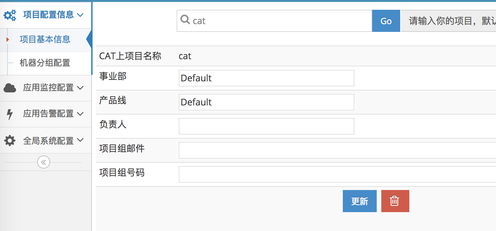
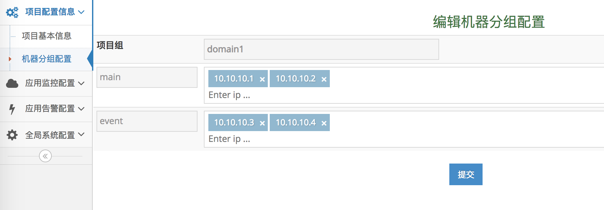

项目配置
1. 项目配置
1.1 配置内容

- CAT上项目名称：项目接入CAT后的唯一标识，来识别自己
- 事业部：项目所属事业部
- 产品线：项目所属产品线
- 负责人：项目负责人，只做标识，不做告警的依据
- 项目组邮件：项目负责人邮件，或项目组产品线邮件，多个英文逗号分割。作为发送告警邮件、大象、微信的依据。
- 项目组号码：项目负责人手机号。多个英文逗号分隔。作为发送告警短信的依据。
1.2 修改更新
- 默认展示CAT项目信息，可以输入自己项目名查询自己的项目
- 可以直接修改并更新
- 新上的项目会自动添加，如果需要自己添加，可以点击右侧“添加”链接
2. 机器分组配置

2.1 配置内容
- 项目组: CAT上的项目名
- 机器分组： 分成的几个机器分组
2.2 配置的意义
将分组内的机器的数据做聚合，方便分析数据。如可以按机房分组，按照路由机器分组等，能够在机房粒度查看数据。